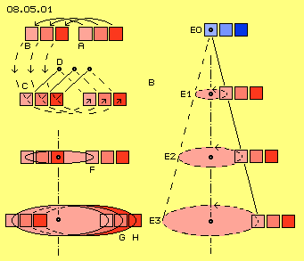
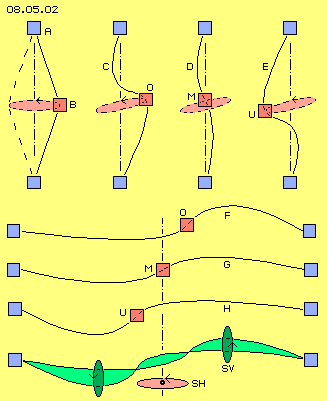
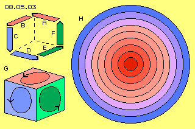

Diese Bewegungs-Notwendigkeiten werden anhand einiger Bilder und Überlegungen nun nachfolgend erläutert.
Schwingen
In Bild 08.05.01 sind wieder diese drei benachbarten Ätherpunkte eingezeichnet, jeweils markiert durch abgestuftes Rot. Der Äther bei A bewegt sich auf einem Kreisabschnitt nach B und weiter nach C (und wird sich weiter bewegen auf einer kompletten Kreisbahn). Der hellrote Ätherpunkt befindet sich links - und blaibt auch während der ganzen Bewegung links von seinen Nachbarn. Dieser Ätherpunkt dreht sich um einen Drehpunkt D (schwarz markiert). Seine rechten Nachbarn drehen sich nicht um diesen Punkt D, sondern um eigene Drehpunkte, die jeweils entsprechend nach rechts versetzt sind.

Diese Bewegung ist eine absolut grundlegende Bewegungsform im Äther. Es ist keine Rotation wie im vorigen Kapitel, wo ein Ätherpunkt im Drehsinn vorn ist und vorn bleibt, also alle Punkte auf einer Kreisbahn um nur einen gemeinsamen Mittelpunkt drehen. Im Gegensatz dazu drehen hier die Nachbarn um jeweils eigene, benachbarte Drehpunkte. Jeder Ätherpunkt bleibt immer auf der gleichen Seite seines Nachbarn. Alle benachbarten Ätherpunkte schwingen also parallel auf benachbarten Kreisbahnen.
Der Unterschied zwischen beiden Bewegungsarten kann durch ein praktisches Beispiel verdeutlicht werden: die Trenn-Scheibe einer ´Flex´ (bzw. einer Bohrmaschine) rotiert um eine Achse, während die Schleif-Scheibe eines ´Delta-Schleifers´ (oder eines anderen Schwing-Schleifers) schwingend ist. Als ´Rotation´ wird hier die übliche Drehung um nur eine Achse bezeichnet, während hier der Begriff ´Schwingen´ ausschließlich diese parallele Bewegung um eine Vielzahl von Drehpunkten benennt (der Eindeutigkeit wegen wird ´Schwingen´ hier auch nicht im Sinne von Wellen-Bewegungen verwendet).
Ausweitung
Aller Äther ist in Bewegung, allerdings ist Freier Äther nur auf minimalen Radien schwingend. Dieser Äther wird darum als (praktisch) ´ruhend´ bezeichnet. Rechts in diesem Bild sind bei E0 drei Ätherpunkte mit abgestuftem Blau markiert, welche diesen ruhenden Äther repräsentieren.
Dieser Äther kann nicht direkt an weiträumige Bewegung angrenzen. Das minimale Schwingen ruhenden Äthers kann nur graduell in ein Schwingen auf längeren Radien übergehen. Auf entfernten Ebenen E1, E2 und E3 kann also Äther durchaus auf jeweils weiteren Bahnen schwingen, wobei wiederum alle hier rot markierten Ätherpunkte ihre Position relativ zum Nachbarn beibehalten.
Im Mikro- wie im Makro-Kosmos herrschen ´astronomische´ Relationen, z.B. soll der Atomkern etwa zehntausend mal kleiner sein als der Bahnradius der um ihn herum rotierenden Elektronen. Die Relation zwischen dem Durchmesser der Sonne und dem Sonnen-System insgesamt ist noch einmal um viele Potenzen größer. Bei dieser Ausweitung des Schwingens muss als Minimum eine Relation von 1:10000 unterstellt werden. Wenn der Radius des Schwingens auf der unteren Ebene E3 in diesem Bild z.B. ein Millimeter wäre, ist die Distanz zum ruhenden Äther bei E0 mindestens zehn Meter. Hier in den Zeichnungen sind diese Relationen also extrem vergrößert.
Um noch einmal dieses parallele Schwingen zu verdeutlichen, ist links auf Ebene E2 die Bahnebene des hellroten Ätherpunktes F als elliptische Fläche markiert. Unten auf Ebene E3 ist diese Fläche entsprechend größer und dort sind die überlagerten Bahnflächen G und H der beiden benachbarten Ätherpunkte zusätzlich eingezeichnet.
Auf einer Ebene schwingen also alle benachbarten Ätherpunkte auf parallelen Kreisbahnen. Alle benachbarten Ätherpunkte in vertikaler Richtung (siehe diagonale Verbindungslinie, rechts durchgezogen, links gestrichelt) schwingen ebenfalls parallel zueinander, allerdings von oben nach unten auf graduell größeren Kreisbahnen.
Doppel-Kegel
In Bild 08.05.02 ist bei A wieder ruhender Äther (blau markiert) und bei B eine Ebene größter Ausweitung (rot) eingezeichnet. Die Verbindungslinie zwischen A und B zeigt vertikal benachbarte Ätherpunkte an. Durch die schwingende Bewegung beschreibt diese Verbindungslinie einen Kegel. Auch nach unten hin muss diese Ausweitung wieder zurück führen zu ruhendem Äther (blau markiert), d.h. dieser ´Schwingungs-Kegel´ muss symmetrisch sein.
Die schwingende Ebene kann gigantische Ausmaße annehmen, beispielsweise als Kern der Milchstrasse. Der Durchmesser der Milchstrasse hat eine Größenordnung von 160000 Lichtjahren. Die Milchstrasse ist aber nur etwa 16000 Lichtjahre ´dick´, die Distanz zwischen beiden ´Polen´ bzw. die Höhe beiden ´Schwingungs-Kegel´ ist relativ kurz. Ein Kegel würde also rund 8000 Lichtjahre lang sein und damit könnte der Radius des mittigen Schwingens maximal 0.4 Lichtjahre betragen.
Der Äther mittig in diesem Bewegungssystem schwingt also um 0.4 hin und her in der äquatorialen Ebene. Die Verbindungslinien zum ruhenden Äther sind links und rechts je 80000 lang, bzw. alternierend zwischen 80000,4 und 79999,6 - was problematisch ist im lückenlosen, unelastischen, nicht kompressiblen und nicht expansiblen Äther.
Gekrümmte Verbindungslinien

Im unteren Teil des Bildes stellen die blau markierten Ätherpunkte jeweils ruhenden Äther dar, links und rechts von diesem Bewegungs-System. Der rot markierte Ätherpunkt befindet sich einmal rechts von der Systemachse (bei O), genau mittig (bei M) und einmal links von der Systemachse (bei U). Es sind jeweils die Verbindungslinien seitlich zum ruhenden Äther eingezeichnet. Die vorige Differenz ist nur zu überbrücken, wenn diese Verbindungslinien mehr (bei F) oder weniger (bei H) gekrümmt und nur bei der mittigen Position fast symmetrisch sind (bei G). Diese Krümmung ist wieder extrem überzeichnet, während die wahre Relation hier etwa 1:200000 wäre (1 mm auf 200 m).
Äther ist ein ´Fluidum´, allerdings ohne Teilchen. Der Vergleich mit Wasser hinkt also insofern, als Wasser aus gegeneinander verschieblichen Teilchen besteht. Wasser ist allerdings (fast) so inkompressibel wie Äther. Wasser fließt nicht geradewegs den Berg hinunter, vielmehr resultiert aus der geringsten Asymmetrie ein kurviger Verlauf, bis hin zu mäander-förmigem Strömen. Genauso darf man beim Äther keine Geradlinigkeit unterstellen.
In diesem Bild ganz unten sind vorige Verbindungs-Kurven übereinander gelegt. Der hellgrüne Bereich markiert den Bewegungsraum der dortigen Ätherpunkte. Ausgangspunkt der Überlegungen war ein Schwingen in horizontaler Ebene, hier durch die waagerecht liegende Ellipse SH skizziert. Tatsächlich wird diese diagonal angeordnet sein, wie die mittige hellgrüne Fläche anzeigt. Diese Verbindungs-Kurven werden sich nicht geradlinig auf- und abwärts bewegen (weil lineare Bewegung sowie Stillstand an Totpunkten nicht möglich sind im fortwährend sich bewegenden Äther). Vielmehr werden sie in einer vertikal schwingenden Bewegung (SV, dunkelgrün markiert) diese Positionen einnehmen.
In diesem Bild oben-rechts sind Längsschnitte durch die Systemachse skizziert. Die mittige Schwingungs-Ebene ist als hellrote Ellipse eingezeichnet, nun allerdings in dieser diagonalen Anordnung. Wenn der rot markierte Ätherpunkt sich oben-rechts befindet (bei O), ist die Distanz zum oberen Pol relativ kurz, d.h. die obere Verbindungslinie C muss stark gekrümmt sein. In einer mittleren Position (bei M) sind die Verbindungslinien D nach oben weniger gekrümmt. Wenn dieser Ätherpunkt nach links-unten geschwungen ist (bei U), ist die Verbindungslinie E relativ gestreckt. Die Verbindungslinien zum unteren Pol weisen jeweils analoge Krümmung auf.
Asymmetrie
Aus technischer Sicht denkt man zu sehr in Geraden und perfekten Kreisen. Obiges Beispiel des Wassers zeigt aber auf, dass ´die Natur´ sehr viel flexibler angelegt ist und Bewegungen fast nie nach unseren geometrischen Idealvorstellungen vonstatten gehen. Auch unsere Milchstrasse zeigt ein eher ´wirres Bild mit unvollkommenen Spiralarmen´. Man darf also nicht unterstellen, dass die Bewegungen in diesem Wirbelsystem total symmetrisch sind.
In vorigem Bild sind z.B. diese vertikalen Schwingungen (SV, dunkelgrün markiert) auf der einen Seite unterhalb und auf der anderen Seite oberhalb der äquatorialen Ebene angeordnet. Entsprechende Asymmetrie weisen auch die vertikalen Verbindungslinien auf, die sich also durchaus nicht immer vollkommen parallel zur mittigen Schwingung bewegen.
Wann immer eine Kurve stärker gekrümmt wird, ist ´vorn und hinten´ unterschiedlich viel Raum gegeben, was nur wiederum durch überlagertes Schwingen um diese Linie herum auszugleichen ist. Es kann also unterstellt werden, dass ausgleichende Bewegungen nicht entlang gerader Verbindungslinien erfolgen, sondern entlang gekrümmter Verbindungslinien. Diese Kurven werden in alle Richtungen mehrfach gekrümmt sein, auch stärker als eigentlich erforderlich - analog zu obigem Mäander-Verlauf des Wassers.
Ortsfeste Mauer bzw. starre Kugel
Nach meiner Überzeugung sind solche ´Potentialwirbelwolken´ ein grundlegendes und weit verbreitetes Bewegungsmuster im Äther. Nicht nur Galaxien und Sonnensysteme, sondern auch Elektronen bestehen aus Bewegungen nach diesem Muster. Deren Durchmesser wird mit etwa 10^-16 m angegeben, also ein ´Winzling´ im umgebenden Vakuum oder Nichts - nach gängiger Anschauung. Real steht diesem ´Teilchen´ rundum Freier Äther gegenüber, der ortsfest und ruhend bzw. nur auf ´quanten-kleinen´ Radien schwingend ist. Dieser Äther bildet also eine ´massive´ Wand bzw. eine ´feste´ Hohl-Kugel um den Raum, der ein Elektron repräsentiert (und dieser ist vielfach größer als allgemein angenommen).
In Bild 08.05.03 sind Bewegungen in diesem Elektron-Raum schematisch skizziert. Eine Bewegung A verläuft von rechts nach links - und läuft gegen die ´Wand´. Diese Bewegung kann in diese Richtung nicht weiter laufen (weil theoretisch dann aller Äther sich in dieser Richtung durch das ganze Universum ebenso bewegen müsste). Die Bewegung kann nur ausweichen, hier nach B, und ist in der alten Richtung erst beendet, wenn die neue Richtung genau rechtwinkelig dazu weist.
Verschlungene Bahnen

Die Bewegung B trifft allerdings auf dort bereits befindlichen Äther, der wiederum rechtwinklig ausweichen müsste in Richtung C. Analoges gilt für D und E. Erst bei F wird der durch die Bewegung A verlassene Raum wieder ´aufgefüllt´ und ´beißt sich die Katze in den Schwanz´. Allerdings darf dabei noch immer keine Rotation aufkommen, sondern nur überlagertes Schwingen. Die Bewegungen verlaufen natürlich nicht linear und dann jeweils rechtwinklig querab, sondern fortwährend auf gekrümmten Bahnen.
In diesem Bild ist unten bei G die generelle Aussage visualisiert: jede Bewegung im Äther ist ein Schwingen, welches zugleich in allen drei Ebenen des Raumes statt findet. Real wird es also kein Schwingen auf einer planen Ebene und auch nicht auf einer reinen Kreisbahn geben. Aller Äther ist immer zugleich in allen Richtungen schwingend. Seine Bahn ergibt sich aus der Überlagerung von mindestens drei Kreisbahnen.
Das ist visuell wirklich nicht einfach vorstellbar, allerdings kann die schematische Reduzierung auf nur zwei überlagerte Kreisbahnen oder auf nur zwei Ebenen die wesentlichen Sachverhalte durchaus aufzeigen.
Rechtwinkelige Wirkung
Dieses Prinzip ist von genereller Bedeutung: Bewegungen können nicht unendlich in eine Richtung laufen und nur ein Ausweichen genau rechtwinkelig dazu beendet das Problem. Weil alles Schwingen, egal wie komplex, immer wieder zum Ausgangspunkt zurück kehrt, bedingen sich alle Bewegungen gegenseitig. Hier kann z.B. die Bewegung A nicht allein starten, sondern der ganze Kreislauf kann nur insgesamt in Gang kommen.
Diese Abhängigkeit der Erscheinungen und der rechtwinklig zueinander stehenden ´Felder´ ist wohl bekannt beim Elektro-Magnetismus. Der Effekt ist bekannt, kann per Formeln exakt dargestellt werden, wird in der Technik laufend angewandt und beherrscht - nur das ´Warum dieses seltsamen Gesetzes´ ist vollkommen unbekannt. Die Antwort kann nur lauten: diese Erscheinung tritt absolut zwangsweise nur dann auf, wenn anstelle abstrakter ´Felder´ ganz konkrete Bewegungen eines realen Mediums unterstellt werden - und nur, wenn dieser Äther ein lückenloses Plasma ist.
Ein anderes ergibt sich aus den sich zwangsläufig gegenseitig bedingenden Bewegungen: sobald sie einmal in Gang gesetzt wurden, können sie nicht anders als fortwährend weiter zu laufen. Der Bewegungsablauf ist praktisch geschützt durch die ´Mauer´ des umgebenden Freien Äthers. Darum können z.B. Elektronen so langlebig sein. Andererseits ist damit keinesfalls die Unversehrtheit aller Potentialwirbelwolken auf ewig geschützt - auch Galaxien können Crash erleiden.
Potentialwirbel
In vorigem Bild ist rechts bei H ein weiteres grundlegendes Prinzip lokaler Ätherbewegung skizziert. In unserer Teilchen-Welt kennen wir drehende Bewegung in Form von Rotation, überall drehen sich Achsen und Räder. Das sind ´starre Wirbel´ mit der jeweils schnellsten Bewegung an deren Umfang. Das gegensätzliche Bewegungsmuster sind ´Potential-Wirbel´, bei denen die intensivste Bewegung im Zentrum herrscht.
Genauso muss sich Bewegung verhalten, wenn sie als eine lokal begrenzte Erscheinung innerhalb der großen Weite allen umgebenden Freien Äthers bestehen will. In diesem Bild repräsentiert der dunkelblaue Ring den ortsfesten Äther. Dieser ist nahezu ruhend bzw. nur auf minimalen Radien schwingend. Weiter nach innen (hellblaue Ringe) wird das Schwingen weiter und ganz im Zentrum (rote Bereiche) findet das Schwingen auf den weitesten Radien statt.
Das gilt für die ´taumelnde Mittelachse´ von Pol zu Pol, wobei der Übergang in vertikaler Richtung relativ einfach ist, weil voriger Kegel nur weiter wird von Ebene zu Ebene. Schwieriger ist der Übergang in horizontaler Richtung, weil dort diese seitliche Verschiebung ´abzufedern´ ist, was nur durch gekrümmte Verbindungslinien zu erreichen ist und daraus wiederum eine diagonale Anstellung der äquatorialen Ebene resultiert.
Der Übergang von außen nach innen ist fließend (also nicht in abgegrenzten Stufen wie in dieser vereinfachten Darstellung skizziert ist). Dieses Wirbel-System ist also durchaus lokal begrenzt, hat aber nach außen keine scharfe Abgrenzung. Dieses Bewegungsmuster nannte ich darum ´Potentialwirbel - Wolke´. Weil es in unterschiedlichsten Größenordnungen auftritt, hat es grundlegende Bedeutung - Äther muss sich so bewegen.
Wie zuvor schon ausgeführt, kann es im Äther nirgendwo Stillstand geben. Alles muss sich immer schwingend weiter bewegen, nur die Radien des Schwingens sind variabel und auch die Schwingungs-Achsen können im Raum ´taumeln´. In aller Regel werden sich mehrere Kreisbewegungen überlagern, so dass ungleichförmige Bahnen und vielfältige ´Bewegungs-Knäuel´ resultieren. Im nächsten Kapitel wird das grundlegende Bewegungsmuster der ´Potentialwirbelwolken´ nochmals angesprochen.